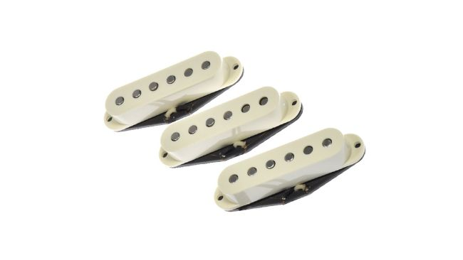
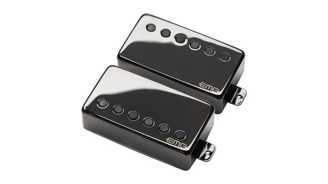
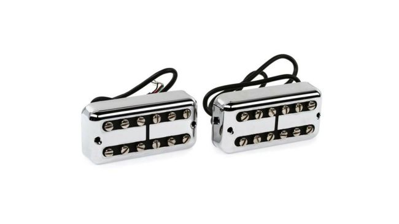
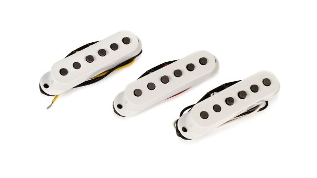
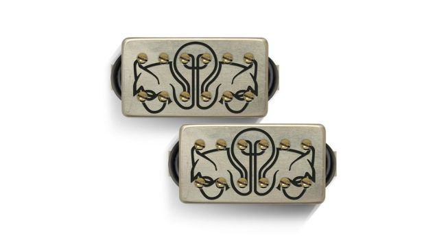

If you find a guitar that you love the feel of but feel its lacking once plugged in, new pickups can be the most effective way of trading up your tone for a fraction of the price of a new guitar. But knowing what you want and what’s on offer from various pickup types is a vital first step. That’s where this best electric guitar pickups guide can help.
+ Great for blues sustain
+ Well balanced for rock styles
+ Pinched harmonics sing
− Metal players may want a hotter bucker

The legendary tone of the Gibson ‘59 Burst Les Pauls is coveted by players for good reason – and Billy Gibbons’ Pearly Gates is an iconic example. So when one of the greatest pickup manufacturers sought to recreate its humbuckers, the results were always going to be special, and that’s why this is number one on our best electric guitar pickups rundown.
Whether you’re a Les Paul owner looking to supercharge your bridge position tone, or want some golden era vintage blues mojo for your humbucker upgrade – these won’t disappoint.
A relatively bright high-end offers sustain with rich harmonics, while midrange raunch can be found too. The Pearly Gates comes with a four-conductor hookup cable to allow for a variety of pickup-switching options.
+ A great upgrade for Strat players
+ Balanced and open sound
+ Great for leads
− Best bought as a set

A best-selling design by Lindy Fralin, the Vintage Hot has been a go-to pickup for Strat players looking to upgrade for three decades now and its name is pretty suggestive as to what you can expect – an open sound but with sizzle in the higher end that’s ideal for lead players wanting to shine.
The Vintage Hot is pitched between Fralin’s other two popular single-coils – fatter than it’s most vintage Read ‘54 but brighter than its Blues Special. It’s all about balance and clarity that many players regard as the ultimate Strat pickup.
+ Great for metal rhythms
+ Neck pickup offers impressive clean tones
+ Attack and low end
− Needs guitar space for 9V battery

As they were first to the table, EMG once had a monopoly in the active pickup field, and although competition is fiercer, its established models still prove to be popular with players - including metal’s greatest rhythm player.
A longtime EMG user in his ESP models, it wasn’t until 2009 that Hetfield asked the company to combine its active tone with some of the character of a single-coil. This set was its response and an evolution of the popular EMG-81 bridge and 60 neck the guitarist used for 30 years.
The JH-N’s larger core offers more attack and low end than the 60. The JH-B offers a clearer low end to combine with the 81’s attack.
+ For vintage Gretsch tone lovers
+ Single-coil spank
+ Great hum cancellation
− Not enough chunk for heavy rockers

Whether you’re looking for vintage country and rockabilly tones from the schools of Chet Atkins and Eddie Cochran, or something a little different for a humbucker upgrade, the Mojo’Tron is a great choice. The original Gretsch Filter’Tron is an early humbucker design that has more spank and punch than your usual ‘bucker, and is thinner with lower output and a more open sound.
The British-made Mojo’Tron is a boutique take on the design; ‘bright and twangy’ for that rockabilly bite. They’re even available in P-90 models, as well as the standard Filter’Tron size. Be patient though as Marc Ransley’s pickups are handmade to order with no shortage of customers, so you may have to wait a little while. But it’s worth it!
+ More versatile than most humbuckers
+ Kills unwanted hum
+ Revolutionary design
− This technology costs

It’s not often that a guitar pickup can be called revolutionary in that last fifty years but the Fluence range is. An active pickup range available in single-coil and humbucker designs, but they offer a unique blend of classic and modern by offering distinct ‘voices’ the player can choose between.
Launched in 2014, Fluence pickups use a solid core instead of the traditional wire coil and the magnets used on these Classic Humbuckers (Modern and Signature sets for artists including Deftones’ Stephen Carpenter, Greg Koch and Tosin Abasi also available) feature blade magnets that create an even magnetic field to enhance definition. There’s also a preamp onboard each pickup that can be charged via USB.
The neck Classic offers two ‘voices’; vintage or clear chime and the bridge has a classic ‘vintage PAF’ and over-wound-style ‘Classic Hotrod’. The third voice for each is a single coil tone. You’re covering a lot of tonal ground here.